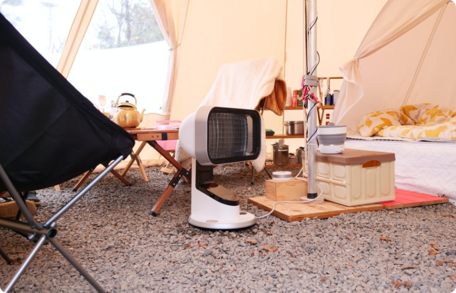
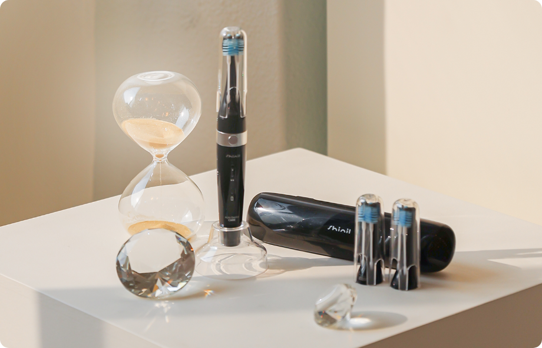
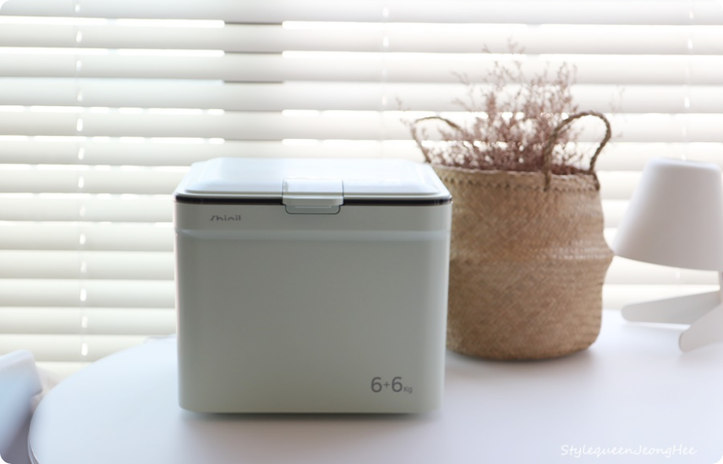

SHINIL PROMOTION
신일전자의 다양한 제품 소식을 만나보세요
프리미엄 DC팬
SIF-12WLD
1구 인덕션
SHL-C2000CDK
신일전자의 다양한 제품 소식을 만나보세요
신일전자의 다양한 소식을 전달합니다
신일, 프리미엄 브랜드 더톤 론칭, 첫 상품으로 더톤 스마트 TV 출시
22.01.06길어지는 집콕 생활! 스마트 기기에서 보던 콘텐츠를 TV로 즐기세요! 신일 프리미엄 브랜드 ‘더톤’ 론칭 첫 상품으로 ‘더톤 스마트 TV’ 출시 에너지 소비효율 1등급 자랑하며 스마트한 기능과 우수한 화질 제공 온라인 동영상 서비스(OTT)를 대형 고화질 화면으로 감상 크롬캐스트와 구글 어시스턴트를 탑재해 사용 편의성 강화
신일전자, 정윤석 대표이사 사장으로 승진 등 임원 인사 단행
21.12.29신일전자 정윤석 대표이사 사장으로 승진 등 임원 인사 단행 정윤석 대표이사 2018년부터 대표이사 겸 부사장으로 기업의 성장을 견인해 사장으로 승진 2022년 인사를 통해 총 4명에 대한 승진 인사 단행
신일, 적은 양의 빨래도 매일 손쉽게 미니 살균 세탁기 출시
21.12.27모아두기 찝찝한 빨랫감 그때그때 깨끗하게 세탁하세요! 신일 적은 양의 빨래도 매일 손쉽게 ‘미니 살균 세탁기’ 출시 코로나19 팬데믹 영향과 미세먼지 발생이 잦아지면서 위생적인 부분을 고려해 적은 양의 빨래도 그때그때 세탁하는 가정들이 많다. 이에 대한민국 종합가전 기업 신일전자(이하 신일)가 3kg 용량의 ‘미니 살균 세탁기’를 출시했다.
집콕 피할 수 없다면 즐겨라! 홈파티 준비를 위한 이색 가전 추천
21.12.16로나19 확산세가 지속되는 가운데 올해도 집콕 연말을 피해갈 수 없게 됐다. 이와 함께 북적이는 외식 대신 집에서 가족이나 지인들끼리 오붓하게 즐길 수 있는 홈파티를 계획하는 이들의 움직임이 심상치 않다. 유명 맛집과 인기 레스토랑 못지않은 분위기를 낼 수 있도록 각종 주방가전부터 블루투스까지 연말 홈파티를 근사하게 만들어 줄 이색가전을 알아보자.